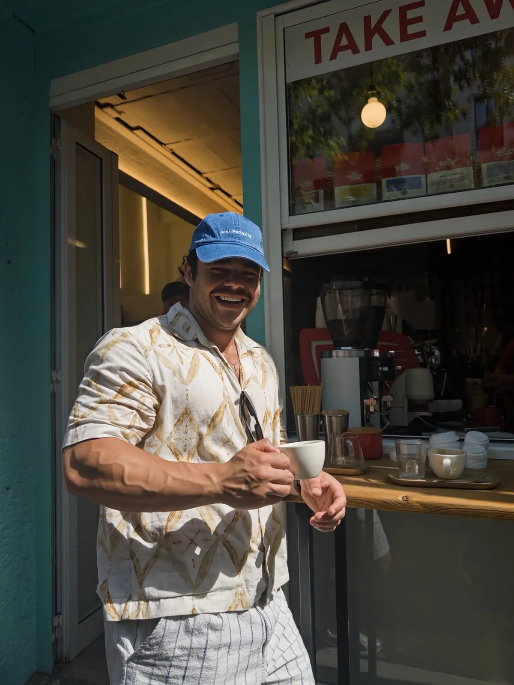
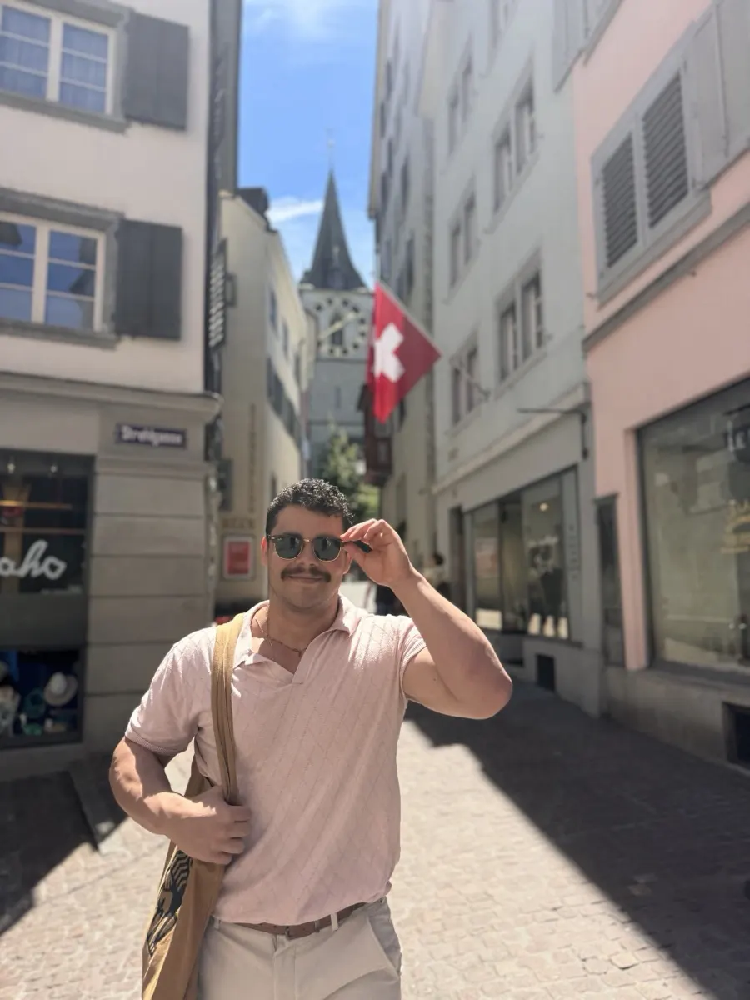
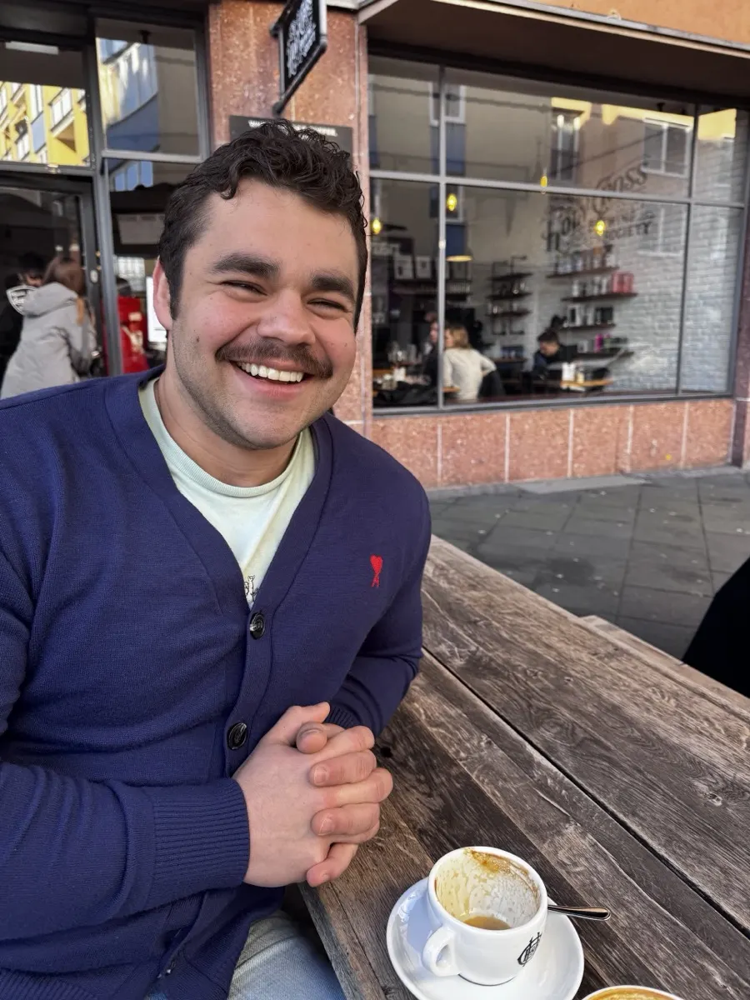
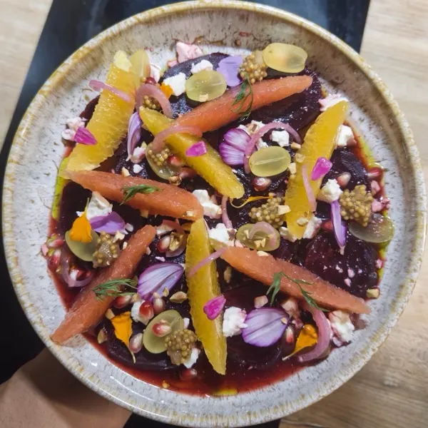
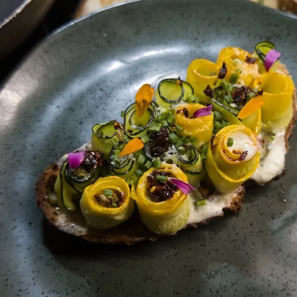
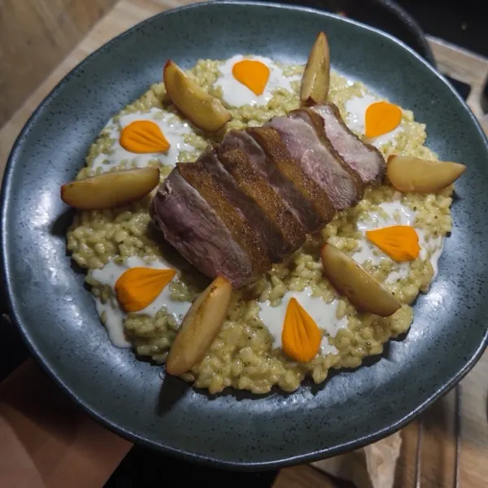

AI engineering · in production
LeBread Ops
A Telegram assistant that replaced a paper overtime sheet at a bakery café in Bern.
4 h/month saved
Read the case studyData & AI · Bern
Industrial engineer, then operations lead, now building AI tools. Currently doing an M.Sc. in Data Science at BFH.

* Cost per request: early numbers, being measured.
Two projects. One is in daily use at a bakery café, the other is from my master's.
AI engineering · in production
A Telegram assistant that replaced a paper overtime sheet at a bakery café in Bern.
4 h/month saved
Read the case studyData engineering · BFH coursework
A small data lake in Docker, queried with Spark straight from object storage.
5.3× faster
Read the case studyFood and coffee run through all of it. A bakery with my dad in Guadalajara, coffee in Chicago, logistics in Germany. Now AI for a bakery café in Bern.
GPA 3.7/4.0. University projects on lean processes, data analytics for decisions and production-line improvement with Uber, José Cuervo, FLEX and ODEM. These were learning projects, part of the degree.
Started it with my dad. A bakery inspired by the German Konditorei, with less sugar. Fitness is part of the concept.
My first job after university, 9 months long. I set up a lean supply chain and a loyalty and promotion programme. VIGO is still running; I moved on.
Raw-material cost 35% → 25% · waste 15% → 7% · recurring customers +70% (100 → 170)
Wrote Power BI queries across several databases for supply-chain KPI dashboards. Supported an SAP S/4HANA migration.
Built a reorder system in Excel/VBA with dynamic reorder points, and Power BI dashboards for the warehouse. Planned shipments across Europe and led the warehouse team.
Shortages −20% · lead times −50% in Germany, −25% across Europe
AI automation for small gastronomy businesses. First client: LeBread, a bakery café in Bern. Kolter to LeBread: back in a bakery, this time writing the software.
4 h/month saved at LeBread
Machine learning and neural networks (TensorFlow/Keras, CNNs), data engineering (Apache Spark, Docker), databases (PostgreSQL).
Spark on Parquet: 5.3× faster

Each one with where I've used it.




I'm looking for data and AI roles in Bern, Zurich, Basel or remote in Switzerland. Email reaches me fastest.